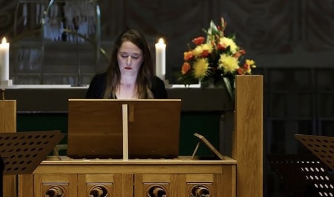

Anna Oramo is a harpsichord player, leader, soloist and ensemble member, having recorded and performed around the world with numerous baroque orchestras and ensembles, such as the Helsinki Baroque Orchestra, the Finnish baroque Orchestra, Orfeo 55, and Ensemble Matheus, among others.
Anna Oramo is a soprano singer, focusing in Medieval, Renaissance and Baroque Music, and practising self accompaniment with mediaeval and baroque harpsichords. She performs with Amor céu mediaeaval ensemble and the Fibo Players. As a harpsichord player she has recorded for labels Aeolus, Alba, Erato and Naxos, with several Diapason d'Or -prizes.
Anna Oramo has Masters of Arts in Harpsichord and Doctor of Music, graduated from the University of Arts in Helsinki (2017). She teaches Early Music (baroque singing) at University Novia in Finland, Collegium ry and Sastamala Gregoriana festival.
Photo: Maarit Kytöharju
Anna Oramo on cembalotaiteilija, joka esiintyy solistina, ensemblen jäsenenä ja johtajana, muiden muassa Helsingin Barokkiorkesterin, Suomalaisen Barokkiorkesterin, Orfeo 55-orkesterin ja Ensemble Matheuksen jäsenenä.
Anna Oramo on myös sopraanolaulaja, joka keskittyy keskiaikaisen, renessanssi- ja barokkiohjelmiston tulkitsemiseen, harjoittaen myös itsensä säestämistä keskiaikaisella ja barokkicembalolla. Oramo esiintyy säännöllisesti Amor céu -yhtyeen ja Fibo Playersin laulusolistina. Hän on levyttänyt cembalistina Alba-, Aeolus-, Erato- ja Naxos -levymerkeille.
Anna Oramo on Musiikin maisteri cembalonsoitossa, ja hänellä on Musiikin tohtorin tutkinto Taideyliopistosta (2017). Hän opettaa vanhaa musiikkia (barokkilaulu) at Ammattikorkeakoulu Noviassa, yksityisessä Collegium ry:ssa ja Sastamala Gregoriana -festivaalilla.